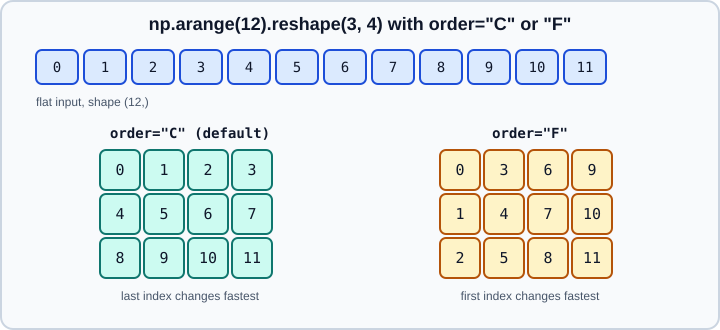

Reshaping, Stacking & Splitting
|
This content was generated with the assistance of AI and should be verified against the official documentation before being relied on in production. |
Most array code is shape bookkeeping: a flat vector of pixels must become an image, a batch of vectors must be joined into one matrix, a matrix must be cut into folds. NumPy provides a small family of routines for this, and they differ in one way that matters for correctness: some return a view of the same memory, and some return a copy. This page covers the array manipulation routines of NumPy 2.5 (current release 2.5.4, October 2026). Examples target Python 3.13 or 3.14 and were run on Python 3.13. Every example was run with NumPy 2.5.4 and the output shown is the real output.
The shape, view and stride concepts are developed in Copies & Views and Memory Layout & Strides; the routines that create arrays are in Array Creation. The size-1 axis tricks used below are what makes Broadcasting convenient.
Reshape
ndarray.reshape(shape) (and np.reshape(a, shape)) returns an array with the same elements in a new shape. The total
number of elements must not change. One dimension may be -1, meaning "work it out from the others".
import numpy as np
a = np.arange(12)
b = a.reshape(3, 4)
print(b.base is a, b.shape) # a view of the same memory
print(a.reshape(2, -1).shape) # -1 is inferred: 12 / 2 = 6
try:
a.reshape(5, 3)
except ValueError as e:
print(e)Output:
True (3, 4) (2, 6) cannot reshape array of size 12 into shape (5,3)
Copy or view?
reshape returns a view whenever the existing strides allow it and silently makes a copy when they do not, for example after
a transpose. The rule is therefore "never assume": if you need a view, check with np.shares_memory, and if you need to
write through to the original, do not rely on reshape of a transposed array.
t = b.T # transposed view, not C-contiguous
print(t.flags["C_CONTIGUOUS"])
r = t.reshape(12) # cannot be done with a view: a copy is made
print(np.shares_memory(r, a))
print(np.shares_memory(b.reshape(12), a)) # contiguous input: still a viewOutput:
False False True
To turn a silent copy into an error, pass copy=False: b.T.reshape(12, copy=False) raises
ValueError: Unable to avoid creating a copy while reshaping. Use copy=True to force a copy. Setting arr.shape directly
is deprecated in NumPy 2.5 (the warning recommends np.reshape with copy=False), and the older keyword form
reshape(newshape=...) was removed in 2.4, so pass the shape positionally or as shape=.
Order
order="C" (the default) reads and writes elements with the last index changing fastest. order="F" uses Fortran order, with
the first index changing fastest. The order applies to the logical reading of elements, independently of how they are stored.

print(a.reshape(3, 4, order="F")[:, 0])Output:
[0 1 2]
Matrices exported from MATLAB, R or Fortran libraries are column-major; reading them with order="F" avoids a transposed
result.
ravel, flatten and the flat iterator
All three produce a one-dimensional result, but they differ in memory behaviour.
| Routine | Result | Use it when |
|---|---|---|
|
A view when possible, otherwise a copy |
You only read the data, or you accept a copy |
|
Always a copy |
You will modify the result and must not touch |
|
A flat iterator, indexable and assignable |
You need element-wise access without allocating |
print(b.ravel().base is a) # view of the original
print(t.flatten().flags["OWNDATA"]) # flatten always owns its dataOutput:
True True
Transposing and moving axes
Reordering axes never moves data: these routines return views with different strides.
| Routine | Effect |
|---|---|
|
Reverse the order of all axes |
|
Permute the axes in the order given |
|
Exchange two axes |
|
Move one or more axes to new positions, keeping the others in order |
|
Transpose only the last two axes (a stack of matrices); added in NumPy 2.0 with the array API standard |
|
Function form of |
x = np.zeros((2, 3, 4))
print(np.swapaxes(x, 0, 2).shape)
print(np.moveaxis(x, 0, -1).shape)
print(np.transpose(x, (1, 0, 2)).shape)
print(x.mT.shape)Output:
(4, 3, 2) (3, 4, 2) (3, 2, 4) (2, 4, 3)
a.T on an array with more than two dimensions reverses every axis, which is rarely what you want for a stack of matrices.
Use a.mT instead. A 1-D array is unchanged by .T; to turn a vector into a column, add an axis as shown next.
Adding and removing axes
A length-1 axis changes how an array broadcasts without changing its data.
v = np.array([1, 2, 3])
print(np.expand_dims(v, 0).shape) # (1, 3): a row
print(v[:, np.newaxis].shape) # (3, 1): a column
print(np.squeeze(np.zeros((1, 3, 1))).shape)
print(np.atleast_2d(v).shape)Output:
(1, 3) (3, 1) (3,) (1, 3)
np.squeeze(a, axis=...) removes only the named length-1 axes and raises ValueError if the axis is not of length 1; without
axis it removes all of them, which can surprise code that expects a fixed number of dimensions when a batch happens to have
size 1. The atleast_1d, atleast_2d and atleast_3d helpers promote scalars and low-dimensional input but follow their own
rules about where the new axis is placed (a 1-D array becomes (1, N) for atleast_2d and (1, N, 1) for atleast_3d).
Joining arrays
concatenate
np.concatenate(seq, axis=0) joins arrays along an existing axis. All other dimensions must match, and the dtypes are
promoted to a common type (see Type Promotion). axis=None flattens every input
first. np.concat is the array API standard alias.
x = np.array([1, 2, 3]); y = np.array([4, 5, 6])
print(np.concatenate([b, b], axis=0).shape) # (6, 4)
print(np.concatenate([b, b], axis=1).shape) # (3, 8)
print(np.concatenate([b, b], axis=None).shape) # (24,)
print(np.concatenate([x, np.array([1.5])]).dtype)
try:
np.concatenate([b, x])
except ValueError as e:
print(e)
print(np.concat([x, y]))Output:
(6, 4) (3, 8) (24,) float64 all the input arrays must have same number of dimensions, but the array at index 0 has 2 dimension(s) and the array at index 1 has 1 dimension(s) [1 2 3 4 5 6]
Both concatenate and stack accept out= to write into a preallocated array, and a dtype= with casting= to control the
result type. concatenate copies its inputs every time: calling it inside a loop makes the loop quadratic. Collect the pieces
in a Python list and join them once at the end.
stack and the convenience functions
np.stack(seq, axis=0) joins arrays along a new axis, so every input must have exactly the same shape.
print(np.stack([x, y]).shape) # (2, 3): new axis 0
print(np.stack([x, y], axis=1).shape) # (3, 2): new axis 1
print(np.vstack([x, y]).shape) # (2, 3)
print(np.hstack([x, y]).shape) # (6,)
print(np.dstack([b, b]).shape) # (3, 4, 2)
print(np.column_stack([x, y]).shape) # (3, 2)Output:
(2, 3) (3, 2) (2, 3) (6,) (3, 4, 2) (3, 2)
| Routine | Behaviour |
|---|---|
|
New axis at a position you choose |
|
Concatenate along axis 0 after making inputs at least 2-D |
|
Concatenate along axis 1, or axis 0 for 1-D inputs |
|
Concatenate along axis 2 after making inputs at least 3-D |
|
Treat 1-D inputs as columns, then |
np.row_stack was a deprecated alias of vstack and is removed in NumPy 2.5: code and older books that call it raise
AttributeError; replace it with np.vstack.
block
np.block assembles an array from nested lists of blocks, the way a block matrix is written on paper. The nesting depth
decides the axis: the innermost list is joined along the last axis, the next along the second last, and so on.
print(np.block([[np.eye(2), np.zeros((2, 1))],
[np.zeros((1, 2)), np.ones((1, 1))]]))Output:
[[1. 0. 0.] [0. 1. 0.] [0. 0. 1.]]
Splitting arrays
np.split(a, sections, axis=0) returns a list of views. With an integer the division must be exact, and with a sorted list of
indices it cuts at those positions. np.array_split allows an uneven division and makes the first pieces one element larger.
print(np.split(a, 3)[1])
try:
np.split(a, 5)
except ValueError as e:
print(e)
print([p.shape for p in np.array_split(a, 5)])
print(np.split(a, [2, 7]))
print([p.shape for p in np.hsplit(b, 2)], [p.shape for p in np.vsplit(b, 3)])
print(len(np.unstack(b, axis=1)))Output:
[4 5 6 7] array split does not result in an equal division [(3,), (3,), (2,), (2,), (2,)] [array([0, 1]), array([2, 3, 4, 5, 6]), array([ 7, 8, 9, 10, 11])] [(3, 2), (3, 2)] [(1, 4), (1, 4), (1, 4)] 4
hsplit, vsplit and dsplit split along axes 1, 0 and 2. np.unstack(a, axis=0) (new in NumPy 2.1, array API standard)
is the inverse of np.stack: it returns a tuple of arrays with that axis removed. Because the pieces are views, writing into
one of them changes the original. For machine-learning splits into train and test sets use the tools described in
Model Evaluation rather than slicing by hand.
Repeating and tiling
print(np.tile([1, 2], (2, 2)))
print(np.repeat([1, 2], 3))
print(np.repeat([[1, 2], [3, 4]], 2, axis=0))Output:
[[1 2 1 2] [1 2 1 2]] [1 1 1 2 2 2] [[1 2] [1 2] [3 4] [3 4]]
tile repeats the whole array, repeat repeats each element. Both copy data. If you only need an array to behave as
if repeated, rely on broadcasting or np.broadcast_to, which stores nothing extra.
Adding, removing, flipping and padding
print(np.append(x, [7]), np.insert(x, 1, 9), np.delete(x, 0))
print(np.flip(b, axis=1)[0], np.roll(x, 1), np.rot90(b).shape)
print(np.resize(x, (2, 4)))
print(np.pad(x, 1, constant_values=0), np.pad(x, 2, mode="edge"))Output:
[1 2 3 7] [1 9 2 3] [2 3] [3 2 1 0] [3 1 2] (4, 3) [[1 2 3 1] [2 3 1 2]] [0 1 2 3 0] [1 1 1 2 3 3 3]
-
append,insertanddeleteeach return a new array; they are convenient but never grow an array in place. -
np.resize(a, shape)repeats the data to fill a larger shape; the methoda.resize(...)works in place and is a different operation (it pads with zeros and refuses when other references exist). -
np.flip,np.rollandnp.rot90reorder elements;flipreturns a view androlla copy. -
np.padsupportsconstant,edge,reflect,symmetric,wrapand other modes and is the standard way to add borders for convolutions and windows.
Choosing a routine
Common pitfalls
-
Assuming
reshapereturns a view. After a transpose or a non-contiguous slice it silently copies, so writes do not reach the original. -
Using
-1twice. Only one dimension can be inferred. -
Mixing
.Tand batches. For stacks of matrices use.mTornp.moveaxis. -
Growing arrays in a loop.
appendandconcatenatecopy each time; collect pieces in a list instead. -
Old function names.
np.row_stack(removed in 2.5) and thenewshape=keyword (removed in 2.4) appear in many tutorials written before those releases. -
Silent dtype promotion. Joining an integer array with a float array returns floats; check
dtypeafter joining.
References
-
NumPy reference, array manipulation routines: https://numpy.org/doc/stable/reference/routines.array-manipulation.html
-
numpy.reshape: https://numpy.org/doc/stable/reference/generated/numpy.reshape.html -
Copies and views: https://numpy.org/doc/stable/user/basics.copies.html
-
numpy.concatenate: https://numpy.org/doc/stable/reference/generated/numpy.concatenate.html -
numpy.stack: https://numpy.org/doc/stable/reference/generated/numpy.stack.html -
numpy.splitandnumpy.array_split: https://numpy.org/doc/stable/reference/generated/numpy.array_split.html -
NumPy release notes: https://numpy.org/doc/stable/release.html